Jarvão — prévia para revisão
Alterações locais, sem commit ou publicação. Relatório, testes e limites. A meta de fluidez ainda precisa ser validada em GPU real.
Desktop — 1366 px
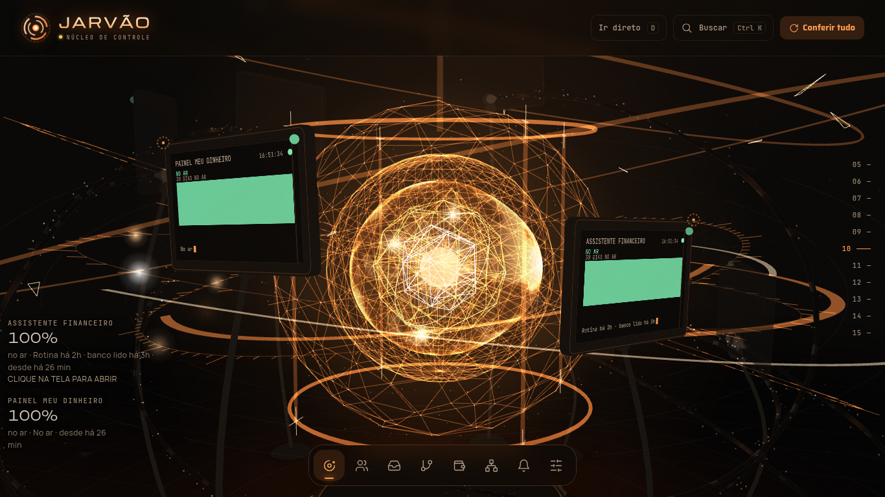
Assistente e Painel — acabamento dos monitores.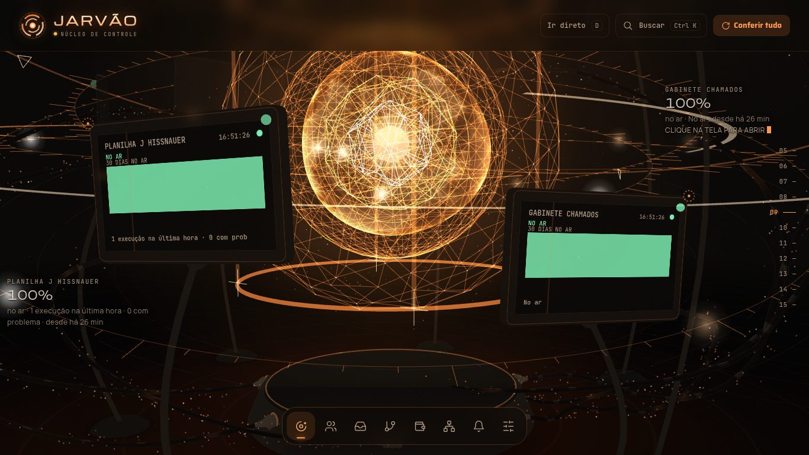
Clientes — rótulos sem as antigas linhas em ângulo reto.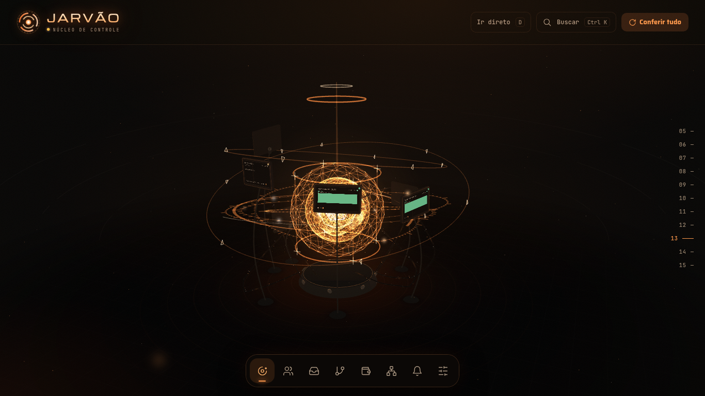
Fios — ambiente e profundidade.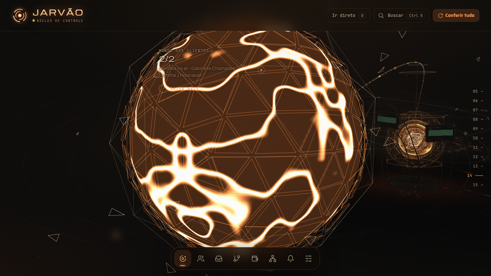
Mundo dos clientes — ligação em 3D.Parallax isolado — mesma câmera e tempo
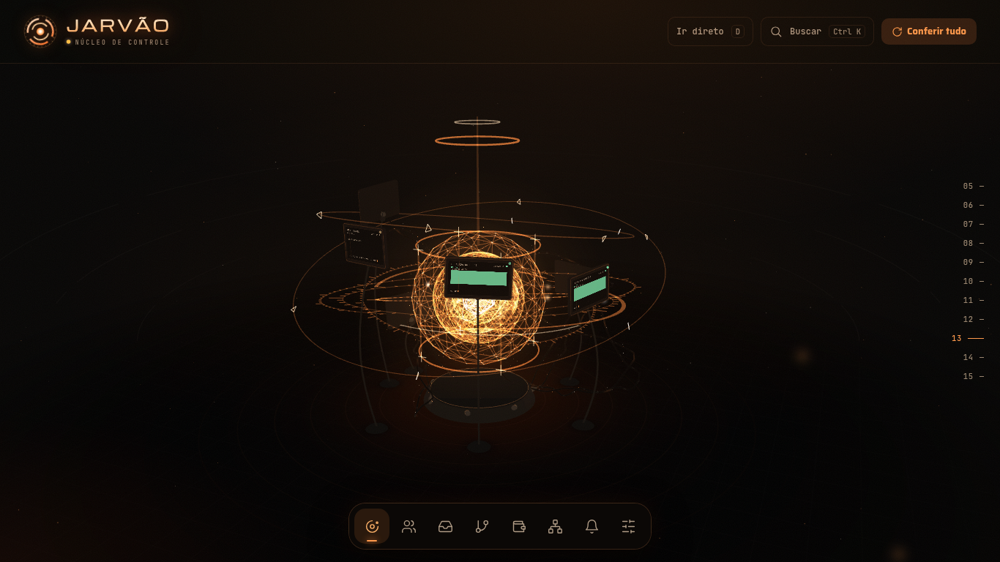
Esquerda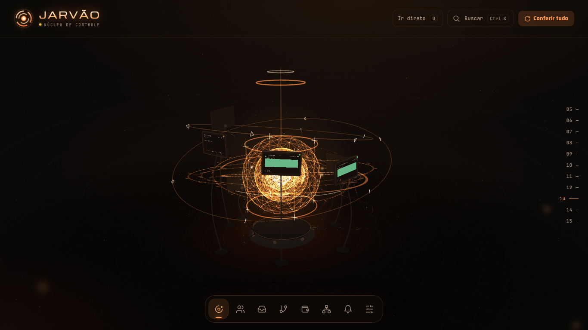
Centro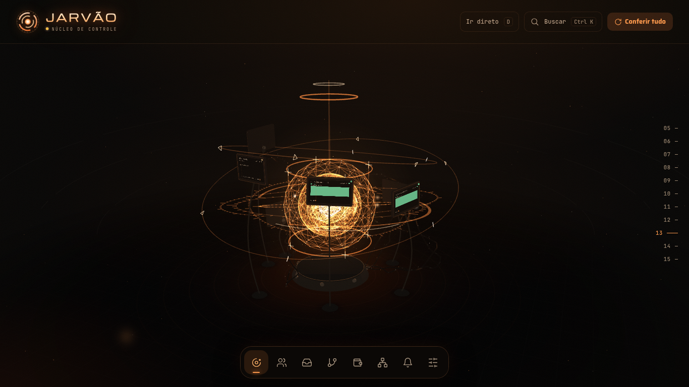
DireitaModo leve — 390 px
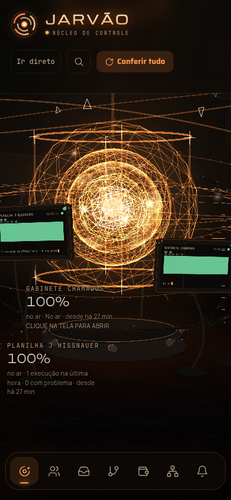
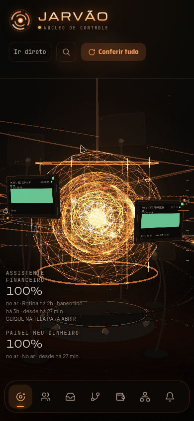
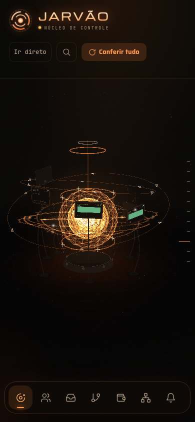
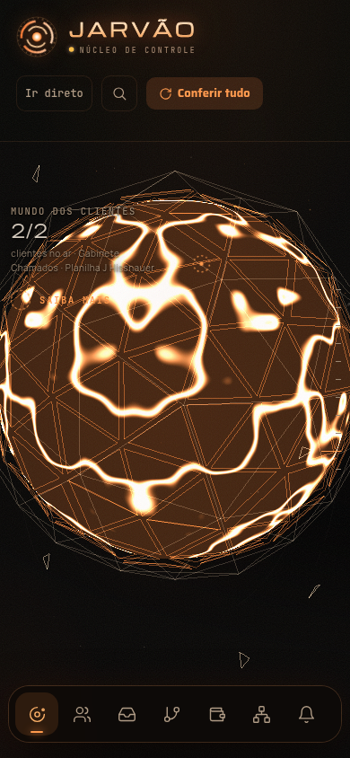